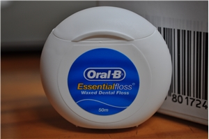

[생활의 명품. 오랄비 치실]
필립스의 오랜 카피라이트.
'작은 차이가 명품을 만듭니다.'
(Let's make things better)
내가 발견한 생활속의 명품 한가지가 있는데. 바로 '오랄비 치실' 이다.
수년전, 치실을 처음 사용하게 되었을때 무심결에 집어든것이 오랄비 치실이었다.
치실을 다 쓰고 새로 구매하려고 편의점에 갔을때 보니 여러 다른 제품의 치실이 함께 놓여있었다.
내 기억으로는 오랄비 치실이 다른 치실에 비해 2~30% 가량 비쌌던것 같다.
치실 뭐 별거 있나 싶어서 다른 치실(국산)을 골랐는데...
새로 산 치실이 어금니 사이에 걸려서 끊어지는 바람에 치실이 풀어진채로 어금니에 걸려버렸다.
질긴 고기가 끼어있는것보다 더 답답한 상황.
다시 치실을 이용해서 빼보려고 했지만 반복적으로 끊어지거나 되려 더 많은 실이 걸려버렸고...
결국 나는 편의점에서 오랄비 치실을 구입해 이빨에 끼어있던 치실을 제거하기에 이르렀다.
최근에는 친구녀석이 1회용 치실을 쓰고 있길래 '이거 쓸만하냐?' 라고 물었더니
'편리하긴 한데 이빨 틈새 몇군데는 안들어가' 라고 대답하길래 오랄비 치실을 권해줬다.
다음에 만난 그 친구는 이미 오랄비 매니아가 되어있었다.
정말 별거 없어 보이는 세계에서도.
우리는 명품을 만날 수 있다.
결론: 오랄비 치실 강추.